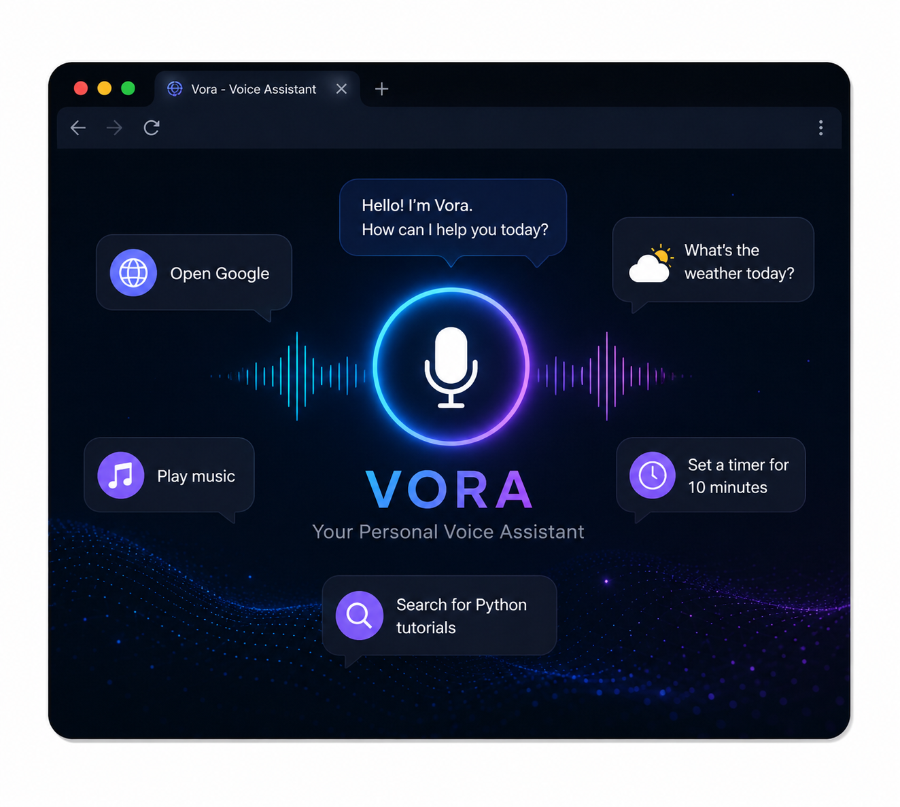

Voice Interaction
Explored the interaction between spoken user commands and a software-based assistant.
PERSONAL PROJECT · PYTHON & VOICE ASSISTANT
A Python-based voice assistant project built to explore voice interaction, automation, and practical application development.
OVERVIEW
Vora is a personal Python project created to explore how a voice-based assistant can interact with a user through spoken commands instead of relying only on traditional keyboard and mouse input.
The project allowed me to experiment with Python, voice interaction and task-oriented automation.
It also helped me understand how different parts of an assistant work together to receive a command, process it and provide a response.
WHAT I BUILT
Explored the interaction between spoken user commands and a software-based assistant.
Used Python as the primary language to build the assistant logic and connect its different functions.
Worked with the concept of receiving commands, interpreting user intent and triggering the appropriate functionality.
Explored how a voice-driven interface can simplify repetitive or task-oriented interactions.
WORKFLOW
The user provides a command through voice.
The assistant processes the received command.
The command is interpreted to determine the required action.
The assistant provides a response or performs the requested task.
INTERFACE

LEARNING
Building Vora introduced me to the idea of interacting with software through natural voice commands and helped me understand the building blocks behind assistant-style applications.
The project strengthened my Python fundamentals and gave me practical experience designing an application around user commands and interactions.
It also sparked my interest in AI and intelligent interfaces and motivated me to continue exploring AI-driven applications.
TECHNOLOGY
TAKEAWAY
Vora strengthened my Python fundamentals and gave me practical experience in designing an application around user commands and interactions.
More importantly, it sparked my interest in AI and intelligent interfaces and gave me a foundation for exploring more advanced AI-assisted applications.
EARLIER WORK / END